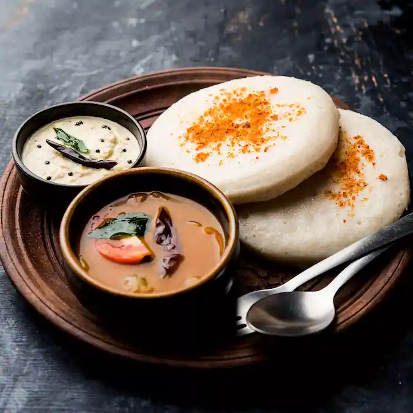

|
How to make Masala idli:-
For Masala Tempering & Garnish:-
1 tbsp Dwaraka Organic Sesame Oil
2 tsp Dwaraka Organic Black Mustard Seeds
1 tbsp Dwaraka Organic Urad Dal
½ tbsp Dwaraka Organic Chilli Powder Regular
½ tsp Dwaraka Organic Turmeric Powder
4-5 curry leaves
¼ cup Chopped cilantro
Salt as needed
½ tsp Dwaraka Organic Chat Masala
Soak urad dal for at least 2 hours and add fenugreek seeds to it.
2In another bowl, soak sooji for the same amount of time. Add just enough water
for the sooji to be submerged.
3Grind them both together along with salt and little water.
4Cover the vessel and leave the batter to ferment overnight in a warm place.
5The batter should rise and lighten like a pancake batter.
6Now, take idli molds, spray cooking oil over it and pour a spoonful of batter into each mold.
7Let it steam in the idli cooker for 8-10 minutes. Once its done, wait for the steam to escape.
8Open the cooker and scoop out the idlis out of the molds.
Idli Tempering & Garnishing:-
9in a pan, heat sesame oil. Temper mustard seeds and urad dal and fry till dal turns golden.
10Now add curry leaves and half of the chopped cilantro and fry for 10-15 seconds.
11Next, add chilli powder, turmeric powder, salt and fry for a few minutes.
12Add the idlis and chat masala, mix it all well.
13Ensure that the masala coats the idlis well.
14Garnish with cilantro and serve.
|

|